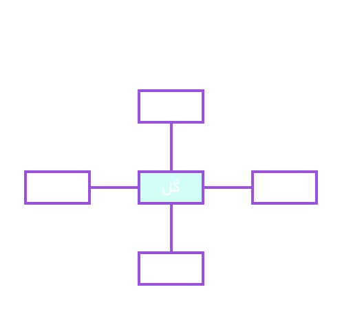
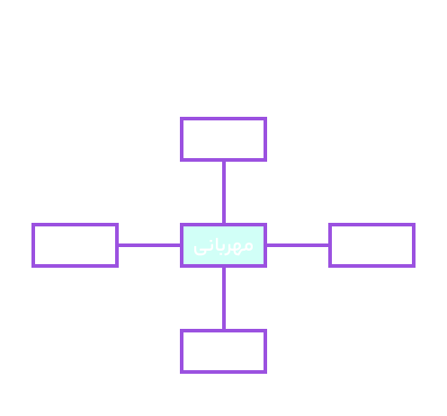
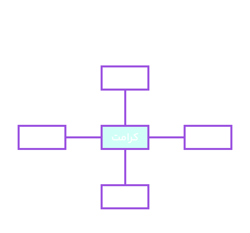

گونه شناسی
ادبیات جهان
از ابتدای کتاب تا این فصل، هرچه خواندیم، مربوط به فضای فکری و معنوی و جغرافیایی میهن عزیزمان ایران بوده است. امّا در این فصل با متنها و شاعران و نویسندگانی آشنا میشویم که بیرون از جغرافیای فرهنگی ایران را تصویر میکنند و مسائل سرزمینهای دیگر یا موضوعهای بشری را در جهان نشان میدهند. از طریق مطالعۀ این فصل، با افکار مشاهیر، اندیشههای ملل و آثار برجسته و شخصیتهای مشهور ادبیات جهان آشنا خواهیم شد.
درس هفدهم
:
سپیده دم
تو را «جنوب» نامیدم
ای که ردای حسین را بر دوش و خورشید کربلا را در بر داری
ای سرخگل که فداکاری پیشه کردی
ای انقلاب زمین که با انقلاب آسمان بَرین پیوند خوردهای
ای سرزمینی که از خاکت خوشههای گندم میروید و پیامبران برمیخیزند.
$***$
تو را جنوب نامیدم
ای کشتیهای صیادی که مقاومت پیشه کردهاید
ای ماهی دریا که مقاومت پیشه کردهای
ای دفترهای شعری که مقاومت پیشه کردهاید
ای روزهای عاشورا!
$***$
تو را جنوب نامیدم
تو را آبها و خوشهها
و ستارۀ غروب نامیدم
تو را سپیدهدمی در انتظار زاده شدن
و پیکری در اشتیاق شهادت نامیدم.
تو را انقلاب و شگفتی و تغییر نامیدم
تو را پاک و پاکیزه و ارجمند و توانا نامیدم.
$***$
تو را جنوب نامیدم
ای چون سبزه برآمده از دفتر روزگاران
ای مسافر دیرین بر روی خار و درد
ای چون ستاره فروزان
ای چون شمشیر درخشان
بگذار بوسه زنیم بر شمشیری که در دستان توست
بگذار گرد و خاک قدمهایت را برگیریم.
$***$
ای سرور بارانها و فصلها،
تو را عطری نامیدم که در غنچهها خانه دارد
تو را پرستو نامیدم
ای سرور سروران، ای برترین حماسه!
$***$
دریا متنی نیلگون است که علی آن را مینویسد
و مریم هر شب، روی شنها به انتظار مهدی مینشیند
و گلهایی را میچیند که از انگشتان شهیدان میرویند.
$***$
تاریخ، روزی، روستای کوچکی را از روستاهای جنوب به یاد خواهد آورد که «معرکه» خوانده میشود.
روستایی که با «صدر»ش، با سینهاش از شرافت خاک و کرامت انسان بودن دفاع کرد.
$***$
سرورم! ای سرور آزادگان!
در زمانۀ سقوط و ویرانی جز تو، کسی نمانده است
که در زندگیمان خلوت عنبُتاکستان بکارد.
جز تو کسی نمانده است؛ مگر تو! مگر تو!
پس درهای امید و روشنایی را به روی ما بگشای!
سمفونی پنجم جنوب، نزار قبانی (1998ــ1923م)
کارگاه متنپژوهی
قلمرو زبانی
1. به نمونههای زیر، توجه کنید. بر پایۀ تناسب (همبستگی) بر پایۀ ترادف (هممعنایی)


$*$
اکنون بر پایۀ نمونههای داده شده، نمودارهای زیر را کامل کنید.


2. از میان موارد زیر، ترکیبهای وصفی و اضافی را جدا کنید؛ سپس، هستۀ هر یک را مشخص نمایید.
«ستارۀ غروب، سرور آزادگان، مسافر دیرین، ماهی دریا، برترین حماسه»
3. در مصراع زیر، نقش دستوری اجزای مشخصشده را بنویسید.
«پس، درهای امید و روشنایی را به روی ما بگشای»
قلمرو ادبی
1. مصراعهای زیر را با توجه به آرایههای «تشخیص، کنایه و تشبیه» بررسی کنید.
ای چون سبزه برآمده از دفتر روزگاران
ای کشتیهای صیادی که مقاومت پیشه کردهاید!
بگذار بوسه زنیم بر شمشیری که در دستان توست.
2. کدام واژۀ مشخصشده، «استعاره» به شمار میآید؟ مفهوم آن را بنویسید.
«ای مسافر دیرین بر روی خار و درد / ای چون ستاره، فروزان»
3. شاعر، «بارانها» و «فصلها» را در کدام مفاهیم نمادین به کار برده است؟
4. کاربرد مناسب شبکۀ معنایی، در شعر و نثر، ضمن آنکه به تداعی معانی کمک میکند، سبب زیبایی و دلنشینی سخن میشود و آرایۀ «مراعات نظیر» را پدید میآورد.
مثال: ابرو باد و مه و خورشید و فلک در کارند / تا تو نانی به کف آری و به غفلت نخوری (سعدی)
از متن درس، دو نمونه مراعات نظیر بیابید.
قلمرو فکری
1. دریافت خود را از سرودۀ زیر بنویسید.
«تو را جنوب نامیدم/......./ای انقلاب زمین که با انقلاب آسمانِ برین/ پیوند خوردهای»
2. در سرودۀ زیر:
«ای سرزمینی کز خاکت/ خوشههای گندم میروید/ و پیامبران برمیخیزند»
الف) کدام سرزمین مورد خطاب است؟
ب) مقصود شاعر از مصراعهای دوم و سوم چیست؟
3. از متن درس، مصراعی را معادل معنای یک قسمت مشخصشده بیابید.
«تو را سپیدهدمی در انتظار زادهشدن/ و پیکری در اشتیاق شهادت نامیدم»
4. قبانی در این بخش از شعرش بر چه نکتههایی تأکید دارد؟
«ای که ردای حسین بر دوش داری/ و خورشید کربلا را در برداری ...»
گنج حکمت
مزار شاعر
تیمورلنگ، گاه سوار بر اسبی که لگامی زرین داشت ـ سرگرم اندیشههای دور و دراز خود ـ از میدان جنگ به گورستان میرفت و از اسب پیاده میشد و تنها در میان قبرها به گردش میپرداخت. هر گاه بر مزار یکی از نیاکان خود یا شاعری بزرگ، سرداری دلاور و دانشمندی نامدار میگذشت، سر فرود میآورد و مزار او را میبوسید.
تیمور، پس از آنکه شهر توس را گشود، فرمان داد که از کشتار مردم آن دست بردارند؛ زیرا فردوسی، شاعر ایرانی، روزگار خود را در آن به سر برده بود. آنگاه تیمور بر سر مزار او شتافت و چون جذبهای اسرارآمیز او را به سوی فردوسی میکشید، خواست که قبرش را بگشایند:
«مزار شاعر غرق در گل بود.» تیمور در اندیشه شد که پس از مرگ، مزار کشورگشایی چون او چگونه خواهد بود. پس، از راه قرهقوم به سوی تاتار ـ آنجا که نیای بزرگش، چنگیز، در معبدی آهنین آرمیده است ـ روی آورد. در برابر زائر نامدار که زانو بر زمین زده و سر فرود آورده بود، سنگ بزرگی را که بر گور فاتح چین نهاده بودند، برداشتند؛ ولی تیمور ناگهان بر خود لرزید و روی بگردانید:
«گور ستمگر غرق در خون بود.»
فرانسوا کوپه